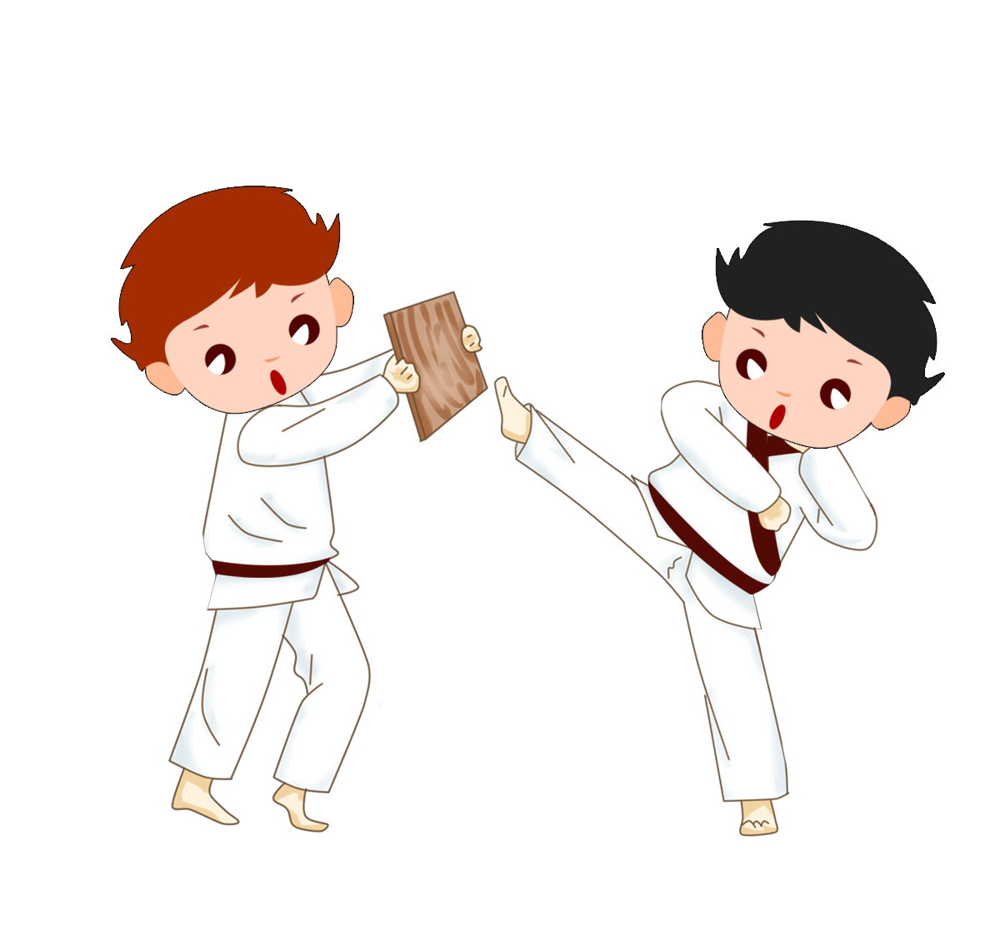
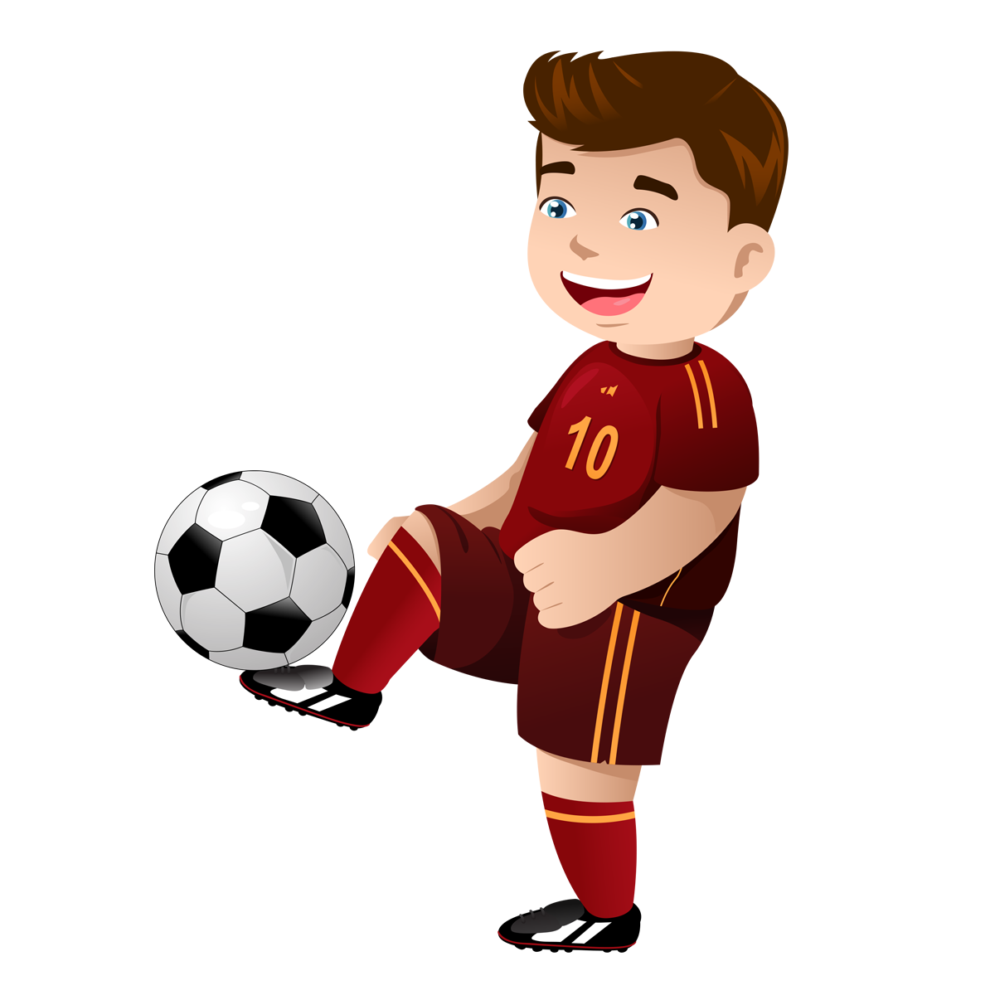
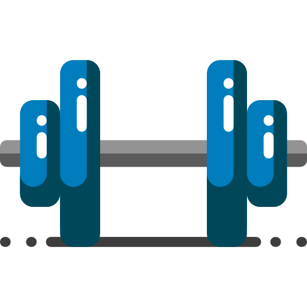
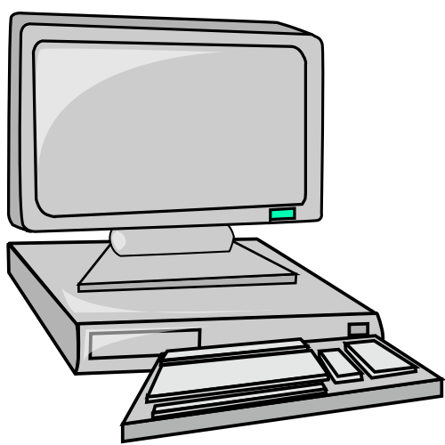

Mes Hobbies et passions
Le sport
Jeux Vidéos
-
J'ai commencer par faire 1 an de Judo à l'age de 4 sans
cela m'a plus mais ce n'était pas assez actif pour moi
donc j'ai voulu essayer un autre sport.

-
Après le judo j'ai donc essayer le foot et cela m'a vraiment plus
donc j'ai continuer à en faire pendant 9 ans mais l'année de
mes 14 ans je me suis blesser ce qui m'a empêcher de continuer ce sport.

-
Depuis 3 mois et jusqu'à ce jour je pratique la musculation ceci est
un nouveau défi pour moi même.

-
Passionner depuis tout petit par l'univers des jeux vidéos cela ma suivit
durant toute mon enfance et mon adolescence et jusqu'à maintenant.
Cette passion à commencer quand j'ai eu la Gameboy Advance SP. -
Par la suite j'ai pu avoir la Nintendo 3DS qui m'a bien changer.
Ensuite à l'arrivé au Collège j'ai eu comme cadeau la PS3 ma première console
ou j'ai passez beaucoup de temps dessus en particulier sur GTA V. -
Et à mon entrée au lycée j'ai eu comme cadeau mon premier pc, c'est à ce moment
la ou j'ai commencer à m'intéresser au monde de l'informatique.
J'ai découvert aussi les jeux classiques sur PC comme League Of Legends,
Minecraft et Counter Strike.


Le sport est pour moi une facon de lacher toute la pression accumuler
durant les moments stressants et de se défouler.
Les Jeux-Vidéos sont comme le sport un moment de plaisir, de partage
et de rigolade entre amis. Ils sont importants pour se divertir.
Cinéma-Séries
-
Je n'ai pas été un grand fan de film durant mon enfance mais je m'intéresse de plus
en plus à développer cette passion. On est dans une période incroyable en terme de
cinématographie, de pure chef d'oeuvre sorte chaque année est pour moi c'est important
de s'intéresser à cet art qui est le cinéma. -
J'ai regarder beaucoup de séries et j'ai eu une petite préférence pour ce format car
cela permet de suivre l'histoire des personnages sur une plus grande durée donc
d'avoir plus de détail sur eux et l'intrigue.
Films préférés : Ready Player One, Le Seigneur des Anneaux, Hunger Games.
Séries préférés : Mr Robot, Breaking Bad, Game Of Thrones.